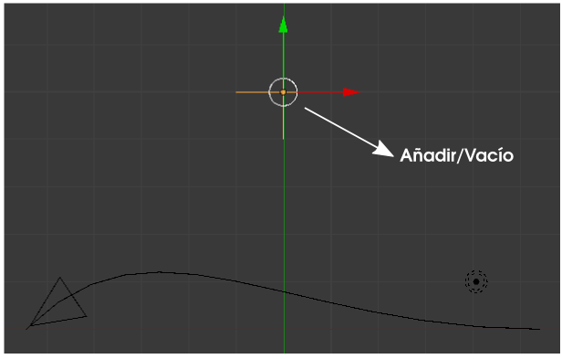
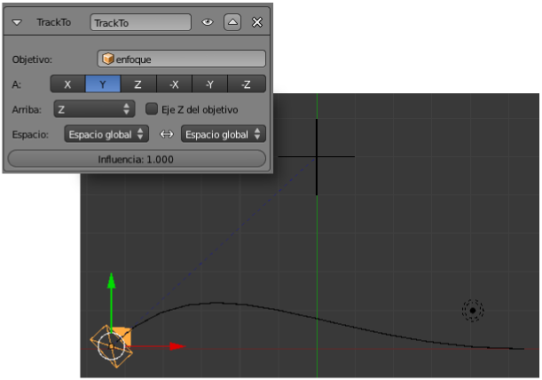
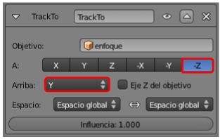
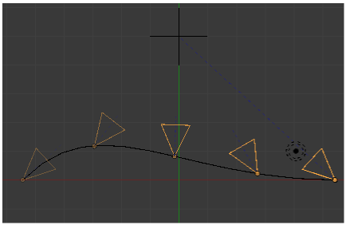

Seguir a
En el caso de la cámara puede que la opción Seguir curva se adapte a nuestras necesidades pero lo más habitual es una situación como la de 3DNP; es decir, que mientras la cámara se desplaza, ésta mira siempre a un punto concreto de la escena.
En ese caso echamos mano de una segunda restricción y, por norma general, de un objeto vacío (Añadir/Vacío) que hace las veces de punto de enfoque.
La idea aquí es que la cámara siempre mire a ese nuevo objeto que, en realidad, podría ser una lámpara o cualquier otro objeto de la escena; el hecho de añadir un Vacío es interesante para no involucrar a ninguno de esos objetos en esta edición.
¿Qué debemos cambiar en la configuración del apartado anterior?
A la cámara le asignamos una segunda restricción de tipo Seguir a donde le escogemos como Objetivo: Empty (este es el nombre que Blender le ha dado al objeto Vacío, pero lo ideal es que nosotros le hubiéramos puesto un nombre apropiado como enfoque). Inmediatamente la cámara se disloca y aparece una línea azul punteada que representa la relación entre la cámara y Vacío.
A raíz de aplicar la restricción Seguir a resulta que la orientación de los ejes marcada en la otra restricción Seguir camino ha dejado de funcionar; es razonable que la cámara no pueda mirar a la dirección de la trayectoria mientras mira también al objeto Vacío.
Importante
Esto que ha ocurrido respecto a que los ejes elegidos en Seguir camino dejen de funcionar es consecuencia de que la restricción Seguir a (track to) está debajo y por lo tanto es la última que se tiene en consideración.
Así que no queda otra que volver a definir los ejes en la restricción Seguir a (Track to).
Al activar la animación, la cámara se verá obligada a mirar a Vacío sea cual sea la posición que ocupe en la trayectoria.
